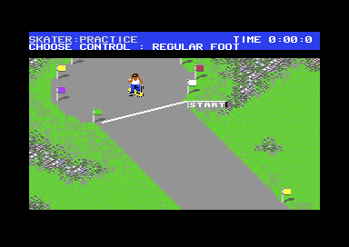

<meta charset="utf-8">
<meta name="viewport" content="width=device-width, initial-scale=1">
<title>Skate or Die!</title>
<link rel="preconnect" href="https://fonts.googleapis.com">
<link rel="stylesheet" href="https://fonts.googleapis.com/css2?family=Lato:wght@400;700;900&family=IBM+Plex+Mono:wght@400;500&display=swap">
<link rel="stylesheet" href="reference/sod-page.css">
<!-- tabs -->
<header class="hero">
  <p class="eyebrow">Commodore 64 · 1987 · Electronic Arts</p>
  <h1>Skate or Die!</h1>
  <p class="sub">The Downhill Race from the code: a course of 255 rows where every cell says what kind of ground it is, a clock that runs fast in Europe, and a score that is mostly time.</p>
</header>
<main class="wrap" data-part="downhill">
<section id="event">
  <p class="fig">01 · The event</p>
  <h2 class="t">A race against the clock through the park</h2>
  <p>The Downhill Race is on side 2 of the disk. The skater rides down a long scrolling course of roads, ramps, rooftops, a lake and a drainage pipe, seen from above, against the clock. Down on the stick pushes for speed, up to a limit (<code>$2B41</code>), left and right turn, and fire with a direction jumps, spins or ducks. Before the start the player picks REGULAR or GOOFY FOOT, and goofy swaps up with down and left with right (<code>$0998</code>).</p>
  <figure class="sod-shot"><figcaption>The Downhill Race. Captured in an emulator from the copy studied here.</figcaption></figure>
  <p>The event loads twelve files of its own on its first run (<code>$1D7C</code>): the course, its character set, three sets of sprites, the messages, the sound effects and a music file that carries code of its own. A PRACTICE AGAIN restart skips the disk.</p>
</section>
<section id="course">
  <p class="fig">02 · The course</p>
  <h2 class="t">Every cell knows what kind of ground it is</h2>
  <p>The course is 255 rows of 40 characters (<code>$A600</code>). A second map of the same size gives each cell its colour in the low four bits and its kind of ground in the high four (<code>$7E00</code>). The game never looks at the picture to know where the skater is: it reads the ground type under the skater and the cells beside it and runs a handler for each type (<code>$3B5E</code>, <code>$3B7E</code>).</p>
  <div class="plate">
    <canvas id="map" class="scr" style="max-width:240px"></canvas>
    <div id="legend" class="note"></div>
    <p class="cap">The whole course as the game sees it, drawn from the high four bits of each cell of the map at <code>$7E00</code>: one small square per character cell, row 0 at the top.</p>
  </div>
  <p>The screen shows 22 rows at a time (<code>$20A5</code>). The flags, a skull and three things in the lake move by rewriting their characters in the character set, so every copy on the course changes at once (<code>$115C</code>).</p>
</section>
<section id="clock">
  <p class="fig">03 · The clock</p>
  <h2 class="t">An American clock on a European machine</h2>
  <p>The clock adds a tenth of a second every six frames (<code>$1060</code>) and stops at 9:59.9. Six frames is a tenth of a second on an American C64, which shows 60 frames a second. A European machine shows 50, so there every game second lasts 1.2 real ones. Landing in the water adds three seconds.</p>
</section>
<section id="score">
  <p class="fig">04 · The score</p>
  <h2 class="t">A second saved is worth a trick</h2>
  <p>Tricks earn points (<code>$0C47</code>): 2 for the skull ramp, 4 for a roof or for passing a hurdle, 3 for riding into the pipe and 10 for coming out of its mouth, 20 for two half turns in one jump, and 5, 20, 40 and 40 for the jumps over the water in turn (<code>$2DF8</code>). Finishing without a fall is worth 5 more (<code>$0D20</code>). Points count only while the clock is under 1:30, and points earned during a fall are lost.</p>
  <p>The score the event hands back is built from the time (<code>$0B14</code>). Each whole second under 1:30 is worth 100, the tenths add 4 each, and every trick point is worth another 100, so a second saved is worth as much as a trick point. From 1:30 on the time is worth nothing.</p>
  <p>Two slips hide in the sum. The tenths go the wrong way: a time of 45.9 seconds is worth 36 more than 45.0, where it should be worth less. And an addition at <code>$0B9A</code> has no CLC before it, so a run under a minute with no trick points loses another 100. A 45.5-second run with no tricks scores 4,421.</p>
</section>
<section id="falls">
  <p class="fig">05 · Falls and the finish</p>
  <h2 class="t">Fourteen scripted actions</h2>
  <p>Riding, the skater is five sprites picked by the direction faced, one of sixteen. Everything else, the falls, the splash, the push-off and the final poses, is a scripted action of its own (<code>$3E57</code>), drawn piece by piece from shapes stored under the I/O area and mirrored when the skater falls the other way (<code>$281E</code>). The final pose shows how it went (<code>$0A2E</code>): one after three or more falls, one for 40 trick points or more, and one for anything else.</p>
</section>
</main>
<script src="../../lib/c64.js"></script>
<script src="reference/sod-page.js"></script>
<script>
(async function () {
  try {
    const D = await SOD.load('downhill'), M = D.ram, s = 4, cv = document.getElementById('map');
    const ctx = C64.canvas(cv, 40 * s, 255 * s);
    // the terrain types of $7E00's high nibble, as the facts name them, and a colour for each
    const T = [['road', 15], ['ramp', 10], ['ramp wall', 2], ['ramp wall', 2], ['rough', 9], ['water', 6], ['roof', 8], ['grass', 5],
               ['bench', 7], ['start, finish, islands', 1], ['wall', 0], ['flag', 4], ['object', 3], ['pipe top', 12], ['pipe mouth', 14], ['pipe', 11]];
    for (let r = 0; r < 255; r++) for (let c = 0; c < 40; c++) {
      ctx.fillStyle = C64.PAL[T[M[0x7E00 + r * 40 + c] >> 4][1]]; ctx.fillRect(c * s, r * s, s, s);
    }
    const seen = new Set();
    document.getElementById('legend').innerHTML = T.filter(t => !seen.has(t[0]) && seen.add(t[0])).map(t =>
      `<span style="display:inline-block;width:10px;height:10px;background:${C64.PAL[t[1]]};border:1px solid #888;margin:0 4px 0 10px"></span>${t[0]}`).join(' ');
  } catch (e) { SOD.fail(e); }
})();
</script>
